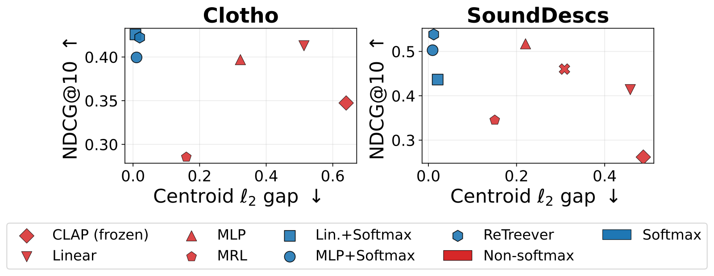
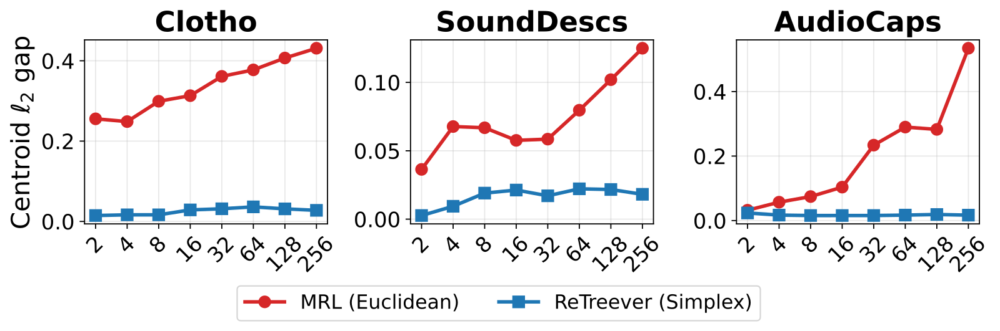

SHARE
Teams building cross-modal retrieval (searching images or audio with text) should read this, with one question in mind. It offers a very cheap trick: attach a small adapter to a frozen encoder, pass its output through softmax so every embedding becomes a probability distribution (nonnegative, summing to 1), and the distance between the text cloud and the image cloud almost disappears. In one sentence: changing the space embeddings live in removes the modality gap better than changing the architecture. In the main tables the distance between modality centroids drops by 97–99%, e.g. COCO (a standard image–caption dataset) from 0.810 to 0.012; but on a scale-normalized measure, the same MLP adapter only goes from 0.438 to 0.239 when softmax is added, and retrieval scores stay roughly flat, slightly lower on image retrieval.
What problem is it solving?
Contrastive models like CLIP (image–text) and CLAP (audio–text) map both modalities into one space so matched pairs land close together. Yet all text embeddings form one cluster and all image embeddings another, offset by a persistent distance: the modality gap.
Why care? An illustrative view:
| Scenario | Effect of a modality gap |
|---|---|
| Text-to-image search only | Small; ranking only needs relative closeness |
| Text and image results ranked in one list | Text results score systematically higher; images sink |
| A fixed relevance threshold | Same threshold means different things for text–text and text–image |
Whether the gap is harmful is debated; some work says collapsing it damages within-modality structure. The paper's stance is to show it can be removed cheaply without hurting retrieval.
Core idea: from the sphere to the probability simplex
Normally embeddings are normalized onto the unit sphere and scored with cosine similarity. The paper instead applies softmax, placing embeddings on the probability simplex, and scores with negative Total Variation (TV) distance.
Why does this pull the clouds together? First, why the gap survives on the sphere: the contrastive loss only asks matched pairs to outscore mismatched ones, so adding a constant to every score changes nothing. Illustration: reserve one dimension for modality, with text at +0.3 and images at −0.3 there. Every text–image cosine gets the same 0.3×(−0.3)=−0.09 from that dimension, so rankings are unchanged, and an offset solution is as good as an overlapping one. The authors attribute this to the many symmetries of the sphere with cosine similarity. On the simplex no coordinate can be negative, so text and images cannot sit at opposite ends of one axis; to separate, each would need its own coordinate, say 0.3 of probability on dimension A for text and on dimension B for images. Because the total is fixed at 1, that 0.3 comes out of the semantic budget, shrinking the score difference between matched and mismatched pairs and hurting the loss, so spending the whole budget on shared semantic coordinates wins. This is the authors' intuition; the evidence comes from the paired controls below. Softmax also ignores a constant added to all logits: (2, 1, 0) and (5, 4, 3) both map to about (0.665, 0.245, 0.090), so a modality whose outputs run uniformly high or low is automatically recalibrated.
How it is built
The pretrained encoders stay frozen: LAION-CLAP for audio–text and FLAVA (an image–text multimodal model) for image–text. A small adapter shared by both modalities (one linear layer or a 2-layer MLP) is followed by softmax. TV distance is half the sum of absolute coordinate differences: for p=(0.7, 0.2, 0.1) and q=(0.5, 0.3, 0.2), the differences are 0.2, 0.1, 0.1, so TV=0.2 and the score is −0.2; identical distributions score 0 and disjoint ones −1. Training uses a symmetric in-batch contrastive loss for 200K steps at batch size 64, with under 1% trainable parameters. Hoot says

- Work it: p = (0.7, 0.2, 0.1), q = (0.5, 0.3, 0.2)
- Absolute differences 0.2, 0.1, 0.1, summing to 0.4
- TV = 0.4 ÷ 2 = 0.2, score −0.2; identical scores 0, disjoint −1
One adapter is shared by both modalities; 200K steps at batch size 64, under 1% of parameters trainable. Source: paper §3: p=softmax(z), s_TV(u,v)=−½‖p_u−p_v‖₁; §5: frozen LAION-CLAP / FLAVA, adapters trained 200K steps, batch 64, <1% trainable
To isolate geometry, every adapter appears twice: once with plain outputs and cosine, once with softmax and TV. A cross-attention pair does the same. There, 100 learned query vectors attend to the token representations of a single input (one caption or one image) and are averaged into one vector, so text and images are still encoded independently, with no joint computation per image–text pair. XAttn outputs plain vectors, ReTreever (the authors' earlier method) outputs simplex vectors.
Measuring the gap fairly
The obvious measure is centroid distance: the L2 distance between the mean text embedding and the mean image embedding. But scales differ across spaces, which means raw distances cannot be compared directly. Two random unit vectors in high dimension sit about 1.41 apart, while for dense distributions on the simplex the paper's formula at d=100 gives a distance of about 0.14, a tenth of that. So part of the 97–99% drop is scale.
The authors therefore propose RelGap: centroid distance divided by the square root of the average of the two modalities' mean squared distances to their own centroids (a gap of 0.02 over a spread of 0.1 gives 0.2). They also estimate how sparse the learned distributions are by fitting a symmetric Dirichlet concentration α: α=1 spreads probability evenly over the simplex (dense), while α far below 1 puts most mass on a few coordinates (sparse). On SoundDescs α falls from about 18 at d=2 to about 0.06 at d=1024, below 1 by d=16. In this sparse regime distances plateau instead of shrinking, so a small gap cannot be explained by scale alone.
Results

| Dataset | Adapter | Centroid gap | RelGap | NDCG@10 (text query) |
|---|---|---|---|---|
| COCO (image–text) | MLP | 0.411 | 0.438 | 0.688 |
| COCO (image–text) | MLP + softmax | 0.012 | 0.239 | 0.686 |
| SoundDescs (audio–text) | MLP | 0.220 | 0.264 | 0.520 |
| SoundDescs (audio–text) | MLP + softmax | 0.010 | 0.179 | 0.507 |
| Clotho (audio–text) | Linear | 0.514 | 0.689 | 0.373 |
| Clotho (audio–text) | Linear + softmax | 0.007 | 0.468 | 0.382 |
RelGap falls consistently, so gap closure is not only scale; retrieval is roughly flat, up on Clotho and slightly down on COCO and SoundDescs. The cross-attention pair agrees: on SoundDescs XAttn has RelGap 0.331 versus 0.097 for ReTreever, so the output space, not attention layers, drives the closure.

MRL (Matryoshka embeddings, whose prefixes serve coarse retrieval) shows a gap rising on AudioCaps from 0.032 at 2 dimensions to 0.534 at 256, about 17 times, while ReTreever stays below 0.06: higher-dimensional plain embeddings let modalities drift apart more easily.
Limitations I see
Retrieval does not improve: with the same adapter, COCO text-to-image goes from 0.688 to 0.686 and SoundDescs text-to-audio from 0.520 to 0.507. If you only do one-directional text-to-image search, ranking was never affected by the gap. Second, the Linear+softmax and MLP+softmax rows differ from the method section: in the audio table each dataset reports the better of L2-normalized input without logit norm or unnormalized input with LayerNorm before softmax, and the image table uses the unnormalized-input variant. The footnotes say so, but those rows get an extra selection step over the baselines. Third, the scale is small: five academic benchmarks (COCO, the largest, has around a hundred thousand images) and two frozen encoders.
How a retrieval team could try it
First check whether the problem exists: if you rank text and image results in one list or filter cross-modal results with one threshold, compare the score distributions of the two modalities. Then train a 2-layer MLP adapter in both variants (plain plus cosine, softmax plus TV) on your encoder and compare RelGap, retrieval, and mixed-list ranking. For serving, note that TV is half the L1 distance, so your vector store must support Manhattan distance rather than inner product or cosine.
Verdict
The main value is a clear geometric explanation: the modality gap largely comes from the excess symmetry of the sphere, and constraining embeddings to the probability simplex removes it at the cost of a small adapter.
| Dimension | Assessment |
|---|---|
| Problem importance | Medium: matters for mixed-modality ranking and thresholds, little for one-way retrieval |
| Novelty | Medium-high: no model change, only the output space; the symmetry argument is convincing |
| Evidence | Medium: well-designed paired controls and a fairer RelGap, but no retrieval gain, small scale, and some per-dataset configuration selection |
| Engineering cost | Low: frozen encoder plus under 1% parameters, but retrieval must switch to L1 distance |
| Worth trying | Yes if you rank modalities together; otherwise read, don't deploy |
How did this read for you?
Hoot made a note. Thanks for the feedback.
One tap, no sign-in; tap again to undo. Only anonymous counts are kept, never who you are.
Discussion
Add experiment details, reproduction notes or a different take. Requires a GitHub sign-in.
Loading the discussion…